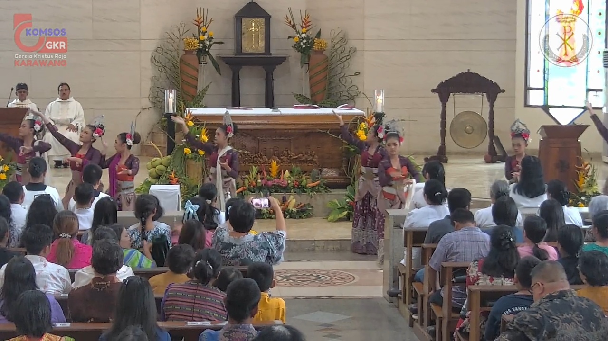
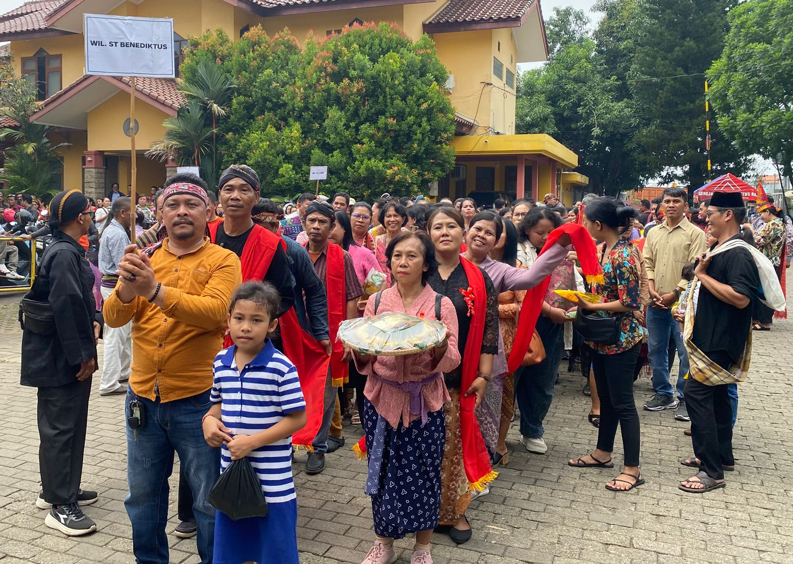

PESTA NAMA PAROKI KRISTUS RAJA KE-63 & HARI PANGAN SEDUNIA

Dengan penuh syukur dan sukacita, umat Paroki Kristus Raja Karawang diundang untuk bersama-sama merayakan Pesta Nama Paroki kita yang ke-63, yang dirangkaikan dengan peringatan Hari Pangan Sedunia (HPS). Perayaan tahunan di Paroki Raja ini senantiasa menawarkan momen refleksi dan syukur yang mendalam, dan tahun ini sukacita tersebut berlipat ganda. Melalui perayaan ganda ini, kita diajak untuk semakin menyadari kasih Allah yang senantiasa menyertai perjalanan paroki kita, sekaligus merenungkan tanggung jawab bersama dalam menjaga dan memperjuangkan hak atas pangan bagi seluruh manusia.
Usia ke-63 tahun bagi Paroki Raja adalah penanda kedewasaan rohani dan kiprah pelayanan yang konsisten. Sejak didirikan, paroki ini telah menjadi rumah rohani, tempat iman bertumbuh, dan pusat penggerak solidaritas sosial. Perpaduan momentum ini menggarisbawahi panggilan universal Gereja untuk peduli terhadap sesama dan keberlanjutan lingkungan. HPS mengingatkan kita pada kerentanan pangan global dan tanggung jawab kita untuk menjamin ketersediaan makanan bagi semua, sebuah nilai yang selalu dipegang teguh oleh komunitas Paroki Raja dalam aksi nyata. Perayaan ini adalah kesempatan untuk memperkuat komitmen
“Dengan acara ini diharapkan umat paroki Kristus Raja Karawang dapat berjalan bersama sehati sejiwa berbagi sukacita.”
Berjalan Bersama Menuju Hak Atas Pangan untuk Kehidupan dan Masa Depan yang Lebih Baik.
Sinergi antara HPS dan Pesta Nama Paroki terwujud nyata dalam serangkaian kegiatan yang menggabungkan dimensi spiritual dan kepedulian sosial, dikemas dalam nuansa budaya Sunda. Seluruh umat dipersilakan mengenakan pakaian adat masing-masing untuk menambah semarak perayaan. Umat diajak untuk menghayati makna perjamuan ilahi dalam Ekaristi, yang kemudian diwujudkan dalam tindakan nyata berbagi dan berhemat. Hal ini merupakan perwujudan iman yang transformatif: menjadikan Paroki Raja tidak hanya sebagai tempat ibadah, tetapi juga sebagai agen perubahan yang aktif mengusahakan kesejahteraan hidup bersama.
Perayaan dilaksanakan pada Minggu, 23 November 2025, Pukul 08.30 WIB di Gereja Kristus Raja Karawang. Acara diawali dengan Misa Kudus yang akan dipimpin oleh ketiga pastor paroki: Pastor Josaphat Judo Pramono, Pastor Agustinus Made, dan Pastor Setevanus Budi Saptono. Setelah Misa, dilanjutkan dengan penyematan ikat kepala kepada ketiga pastor sebagai simbol penghormatan budaya. Puncak aksi nyata Hari Pangan Sedunia terwujud ketika setiap wilayah membuat olahan bahan pangan lokal dari pisang, ubi, singkong, dan jagung. Hasil olahan tersebut kemudian dikumpulkan dan dibagikan kepada seluruh umat yang hadir saat acara berlangsung.
Berbagi dari Hati Selain kegiatan berbagi hasil olahan pangan, perayaan ini juga disemarakkan oleh Aksi Sosial dari Wilayah. Setiap wilayah dan paguyuban menunjukkan kepedulian mereka melalui berbagai program: dari pembagian sembako kepada masyarakat prasejahtera di sekitar lingkungan paroki, bantuan dana pendidikan, hingga kegiatan pemeriksaan kesehatan gratis. Inisiatif ini membuktikan bahwa semangat HPS dan Pesta Nama Paroki tidak hanya berhenti di dalam gereja, tetapi sungguh-sungguh menjangkau dan memberkati masyarakat luas. Ini adalah manifestasi nyata dari tema pastoral kita, bergerak bersama menuju kehidupan yang lebih baik bagi semua.
Selain itu, terdapat aksi nyata dari 7 wilayah, sebagai wujud konkret solidaritas dan keragaman komunitas. Rangkaian acara diakhiri dengan pentas seni yang menampilkan kreasi dari tiap-tiap wilayah dan kategorial Paroki Kristus Raja Karawang, menunjukkan semangat kolaborasi dan partisipasi aktif seluruh elemen paroki. Hal ini menciptakan atmosfer kekeluargaan yang hangat dan memperkuat ikatan persaudaraan umat.
Marilah kita jadikan perayaan ganda ini sebagai titik tolak untuk perubahan yang lebih nyata. Mari kita bawa semangat berbagi, syukur atas hasil bumi, dan pelayanan yang tulus ke dalam kehidupan kita sehari-hari. Dengan semangat Ad Maiorem Dei Gloriam Paroki Raja terus melangkah maju, menjadi lumbung rahmat dan berkat yang melimpah. Selamat Hari Pangan Sedunia dan Selamat Pesta Nama Paroki Kristus Raja ke-63!